PT2399 Analysis
The PT2399 is a CMOS echo/delay processor developed by Princeton Technology Corp. This digital chip includes an ADC (Analog to Digital converter), 44Kb of RAM to store the samples and a DAC (Digital to Analog converter). Although this chip was created as a simple solution to add delay/reverb/echo to karaokes and set-up entertainment systems, it became very popular in the guitar pedal community due to its ability to emulate BBD-based delay circuits, good price, through-hole package, 5V power supply and tolerance to modifications.
This integrated circuit has also demonstrated that with a careful design and good tuning, could be a fantastic sounding solution. Many well-known effects like Belton/Accu-Tronics reverb module, Danelectro FAB-Echo, and the Rebote Delay use this chip as the core of the circuit.
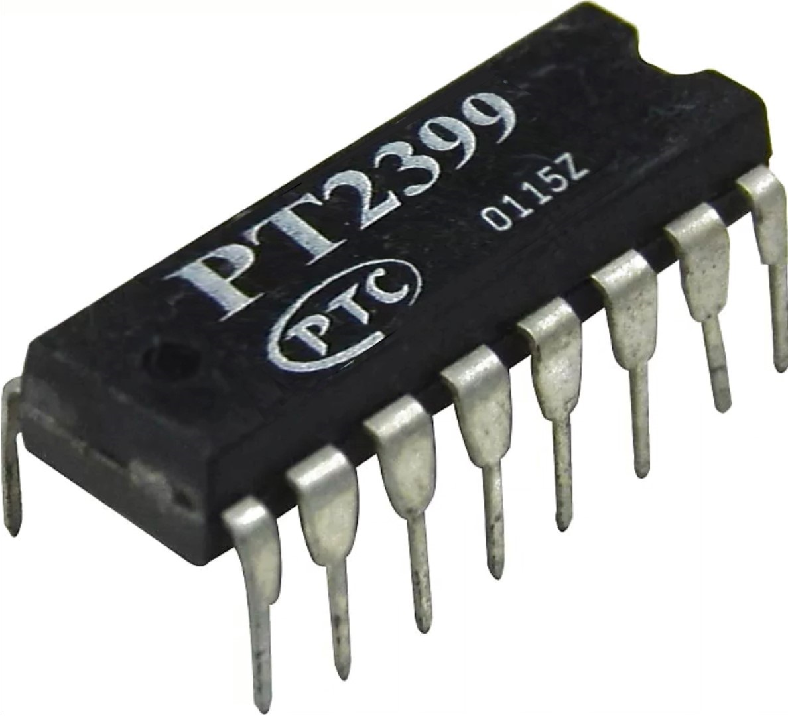
With a minimum delay of 30ms and a maximum of 340ms (that could be extended up to 1 second at the expense of sound quality) makes it perfect for delay, echo and reverb effects.
The official Princeton Technology PT2399 datasheet is vague and many of the internal functions of the IC are not explained either, giving the foundations for mods and think-out-of-the-box solutions. In this article, we are trying to give more insights and information about how this chip works.
Table of Contents:
1. The Princetown PT239X Series.
4. PT2399 ECHO/DELAY Circuit Analysis.
4.1 PT2399 Input Stage.
4.2 PT2399 Output Stage.
5. Measurements.
5.1 Input/Output Levels.
5.2 THD and Noise.
5.3 Frequency Response.
6. Reducing Noise in PT2399 designs.
1. The Princetown PT239X Series.
The Princetown PT239X series includes several ICs with similar capabilities, these are the most popular and available:
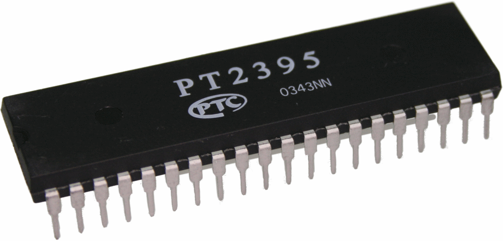 |
.. |
PT2395: 40pins, requires an external DRAM memory (IC 41256 or 4164). It supports short/long mode (64Kb or 256Kb RAM) giving 800ms delay max (extended to 1.5 with noise). Voltage controlled delay time. The shortest delay possible around 10ms (not good for chorus/flanger). Good for long delay/echo. |
|
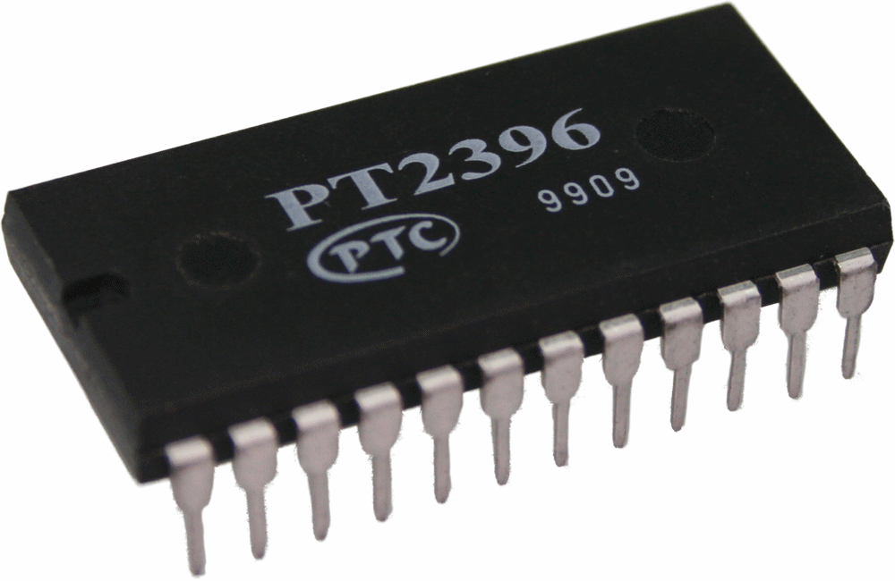 |
PT2396: 24 pins, internal 48Kb memory. It requires an external 2MHz clock and the delay time is set using a serial data communication (a microcontroller is needed). The minimum delay time is 12ms and the maximum 192ms. Its availability is limited. |
||
|
PT2399: 16 pins, the most popular due to its ease of use and availability. With 44Kb internal RAM, the time is set using an external resistor which makes it perfect to simplify the circuit. It has a minimum delay of 30ms and a maximum of 340ms. |
The main problem with the PT2399 is to understand the internal circuit, the Princetown datasheet is not very helpful:
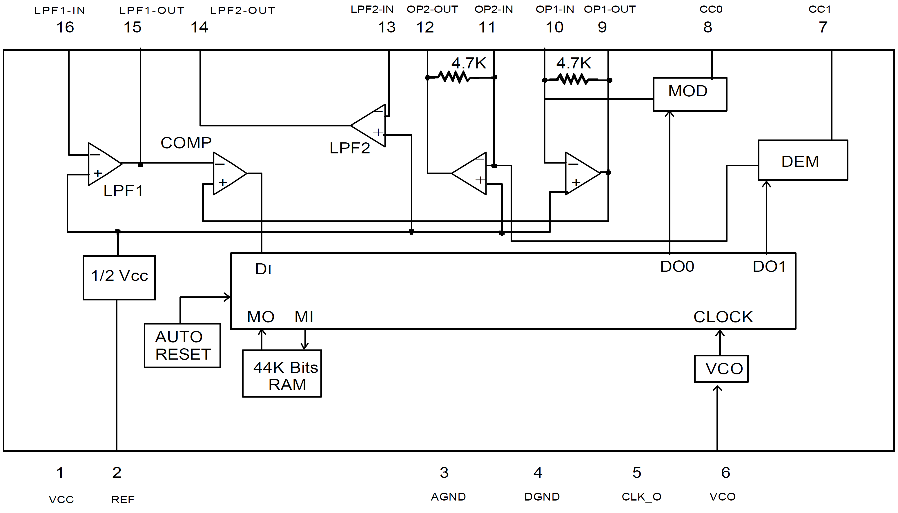
This block diagram could be redrawn in a more logical and simpler way:
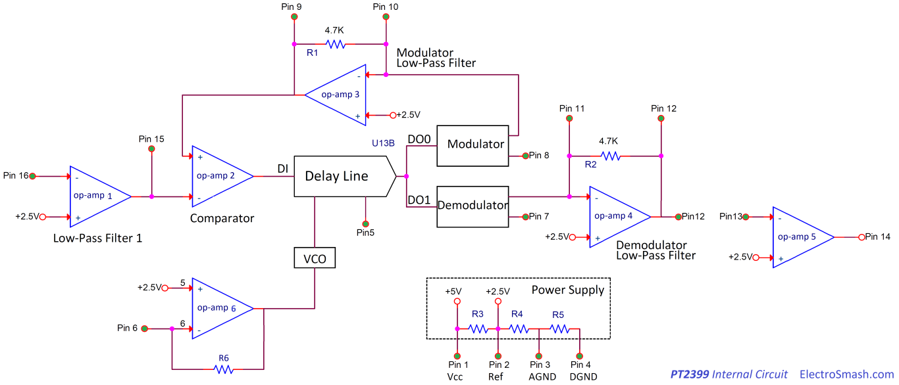
This chip effectively includes 6 internal op-amps ( that the designer can use) and a power supply subsystem. In the next sections, the functionality of each part will be described.
The PT2399 is powered using 5V. In order to preserve the signal quality and reduce noise, it is convenient to use a dedicated supply or regulator. The part consumes a maximum current of 30mA (it decreases when the delay time is increased).
Pin1:
It is the 5V Power supply pin (min 4.5V and max 5.5V). Some users experiment with higher voltages but the most convenient way to use the PT2399 and guarantee a good long life is just to stick to the 5V. A low power supply impedance is essential (to ensure the internal clock functionality), so a simple regulator like the LM7805 (or the pin compatible LM2940) could be used. A pair of input and output caps will keep the power supply clean:
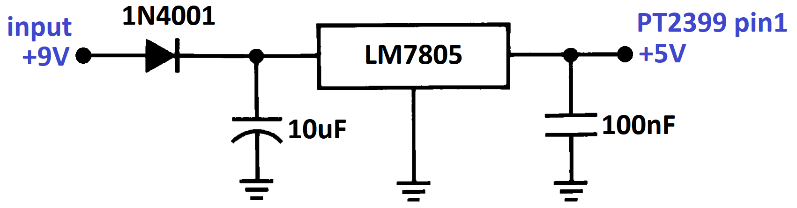
In the circuit above, an effective simple solution for the PT2399 power supply is shown. Using a 1N4001 diode as a protection against accidental reverse polarity connections and 2 caps to filter the input/output. The LM7805/LM2940 will accept a wide range of input voltages (+9V to +15V).
Pin2:
Labeled as REF, it is the 2.5V analog reference voltage (Vcc/2). An internal resistor divider is used to set this voltage, measuring the pins the resistance is around 6KΩ. This is the voltage used as a virtual ground inside the PT2399 and also as a reference voltage for the VCO circuit.
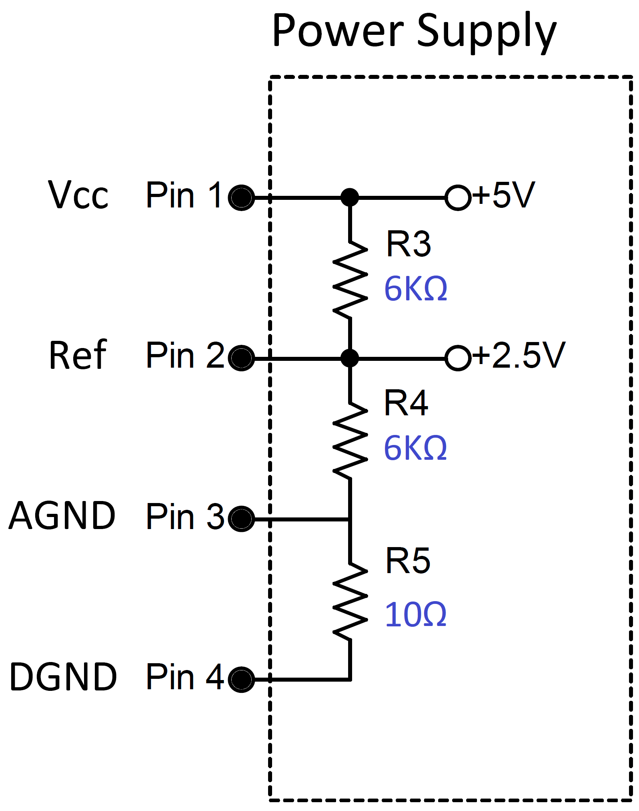
Pin2 Modulation Modification - Chorus:
Discovered by Frequency Central Rick and applied to the Little Angel Chorus. The Circuit inside the PT2399 is something like this:
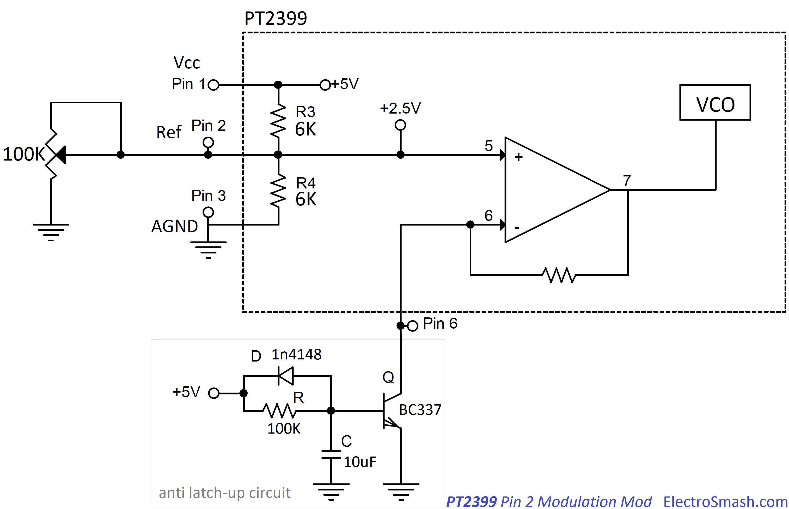
The VCO (Voltage Controlled Oscillator) voltage will command the delay time of the PT2399, following the TABLE 1: VCO FREQUENCY VS DELAY TIME from the datasheet when the frequency of this oscillator is maximum (22MHz) the delay time is minimum (31.3ms) and vice-versa.
If we want to modify the VCO input voltage, the default method is to change the pin6 resistance to ground, that will change the op-amp gain and then, the output voltage.
The "pin 2 hack" is basically changing the voltage on the pin (+) of the op-amp instead of the classic way of changing the voltage on the pin(-). In order to achieve it, the pin 6 resistance to ground needs to be stable stable (usually pin 6 is grounded because it gives the minimum delay time (perfect for chorus), for this option the "anti-latch-up circuit" is needed. -it is explained in the next section) and changing the (+) input voltage of the op-amp. To do that we can access the internal resistor divider (pin2) and modulate it.
- The side effect is that the whole virtual ground (2.5V) of the circuit will be changing together with the time modulation. The good news is that we don’t need a big span of modulation to create a chorus effect, so changing the voltage on pin 2 from 2.5V to 2V will be enough to create time modulation and keep the virtual ground happy.
The Anti Latch-Up Circuit:
During the power-on of the circuit, if the delay resistance from pin 6 to ground is less than 2kΩ then the PT2399 may latch-up, which will make the chip to crash and stop. If a very short delay time is required, ensure that the delay resistance is greater than 2kΩ for the first 400ms after power on. After the first 400ms, the pin6 resistance to ground can go as low as needed.
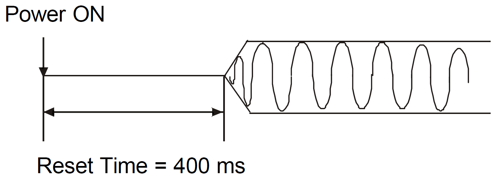
The Anti Latch-Up circuit will ensure that the resistance from pin 6 to ground is higher than 2K during power-on:
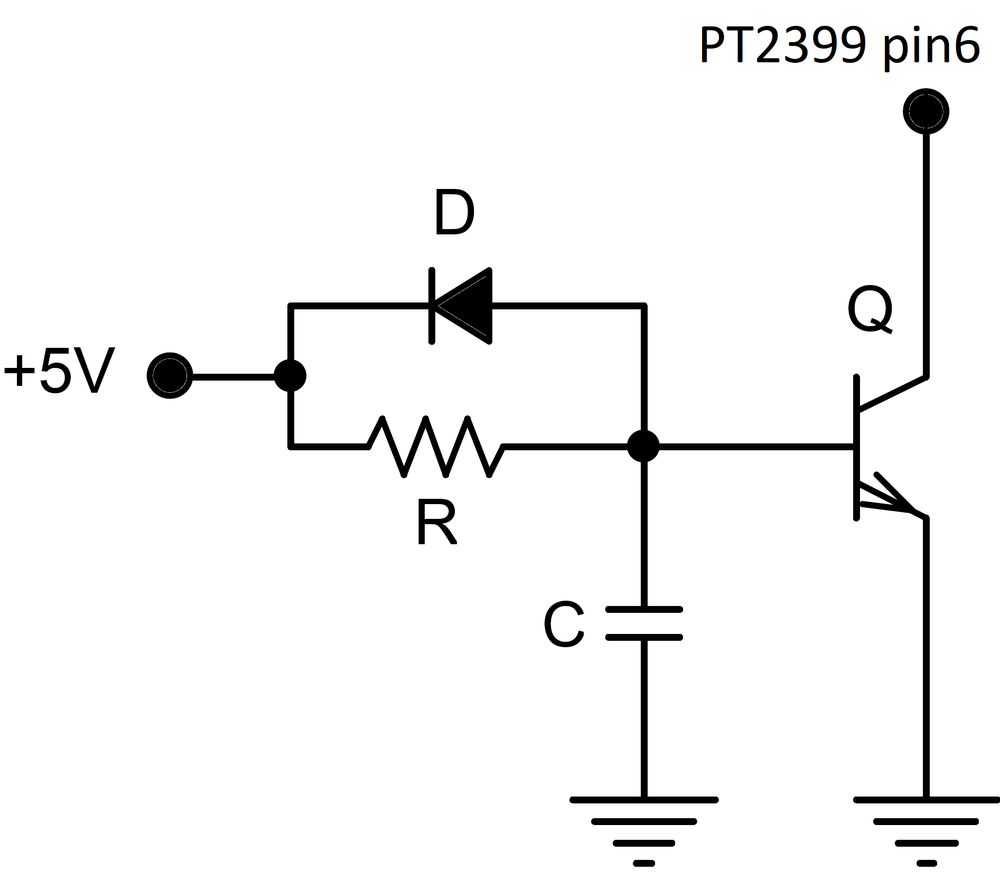
The R/C time constant is set to be significantly longer than the reset time (400ms in the datasheet):
τ = R x C
τ = 100K x 1uF = 1s
Using any values of R=100K and C=1uF of higher will give more than 1 second of start-up time.
The diode can be any 1N4001 or similar, it protects the transistor in the event of a fast drop in power voltage by discharging the cap rather than letting the current flow through the base of the transistor. The transistor can be any generic BC337 or similar.
Pin3 and Pin4:
They are the Analog and Digital grounds, they need to be linked externally with a short thick trace. Measuring with a multimeter, the pins show an external resistance of 10 ohms between them.
Pin 5:
It is the System Clock Output pin (this clock frequency is generated by the VCO explained in the Pin 2 section).
In the image below the pin 5 is measured with an oscilloscope, giving a square waveform of 22MHz with the shortest delay (30ms) and 2MHz with the maximum delay (340ms). the signal is 5Vpp approx (that goes lower with the frequency):
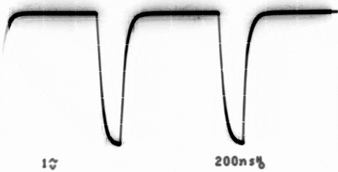
This pin gives feedback of what is really happening inside the PT2399. Using an external resistor on pin 6 to set the delay time could be (sometimes) inaccurate, so the pin 5 outputs the exact amount of delay that the signal will suffer.
There are 2 potential applications for this pin:
- Use the pin 5 clock frequency information in a feedback loop to get the accurate reading of the time delay. To do this, a microcontroller needs to be used and also because of the high-speed of the clock frequency (up to 22MHz) a pre-scaler (that would reduce the accuracy of the readings) needs also to be used. It is not clear that the benefits of reading the internal clock would overcome the extra circuitry and complexity of this mod.
- Override the pin 5 signal using an external clock source. In this way, the user can control the amount of delay in a precise way, but again it is difficult to say that the benefits will pay off extra circuitry and complexity.
Pin 6:
VCO (Voltage Controlled Oscillator) frequency adjustment pin. The voltage at this pin is always 2.5V and using an external resistor to ground the current will change that will result in a VCO variation and delay time change.
Find below a table with the relationship between pin6 resistance to ground, internal clock frequency, delay time and THD. The table is indicative, as the values vary from chip to chip, however it is a good starting point.
| R | 27.6 k | 21.3 k | 17.2 k | 14.3 k | 12.1 k | 10.5 k | 9.2 k | 8.2 k | 7.2 k | 6.4 k |
|---|---|---|---|---|---|---|---|---|---|---|
| f clock | 2.0 M | 2.5 M | 3.0 M | 3.5 M | 4.0 M | 4.5 M | 5.0 M | 5.5 M | 6.0 M | 6.5 M |
| Delay | 342 ms | 273 ms | 228 ms | 196 ms | 171 ms | 151 ms | 137 ms | 124 ms | 114 ms | 104 ms |
| THD | 1% | 0.8% | 0.63% | 0.53% | 0.46% | 0.41% | 0.36% | 0.33% | 0.29% | 0.27% |
| R | 5.8 k | 5.4 k | 4.9 k | 4.5 k | 4.0 k | 3.4 k | 2.8 k | 2.4 k | 2.0 k | 1.67 k |
| f clock | 7.0 M | 7.5 M | 8.0 M | 8.5 M | 9.0 M | 10 M | 11 M | 12 M | 13 M | 14 M |
| Delay | 97 ms | 92 ms | 86 ms | 81 ms | 76 ms | 68 ms | 62 ms | 57 ms | 52 ms | 48 ms |
| THD | 0.25% | 0.25% | 0.23% | 0.22% | 0.21% | 0.19% | 0.18% | 0.16% | 0.15% | 0.15% |
| R | 1.47 k | 1.28 k | 1.08 k | 894 | 723 | 519 | 288 | 0.5 | ||
| f clock | 15 M | 16 M | 17 M | 18 M | 19 M | 20 M | 21 M | 22 M | ||
| Delay | 46 ms | 43 ms | 41 ms | 38 ms | 37 ms | 34 ms | 33 ms | 31 ms | ||
| THD | 0.15% | 0.14% | 0.14% | 0.14% | 0.13% | 0.13% | 0.13% | 0.13% | ||
Note: The THD (Total Harmonic Distortion) is higher with longer delay times, as the signal goes degraded with a lower sampling rate. Using delays over 350ms cause audible distortion, you can read more about this in the Measurements section of the analysis.
Note: Pin 6 current: The voltage on pin 6 is constant (2.5V) but the current flowing out of it current has a linear relationship with the delay time. The practical delay range of the chip is from about 35msecs to 600msecs, so this gives a current of between 5.4mA and 50uA.
Pin 6 current (mA) = 28.65 / (Delay msecs - 29.70)
Controlling the Delay Time with pin6.
There are several ways to set the delay time using the pin6:
- Using a potentiometer: This is the easiest way; following the datasheet suggestion use an external potentiometer of 10K ~ 50K (depending on the max delay time desired). A minimum resistor (R) of 2K is always needed (it will limit the minimum delay time), otherwise, the PT2399 will latch-up during the power-on sequence and the internal oscillator won't start.
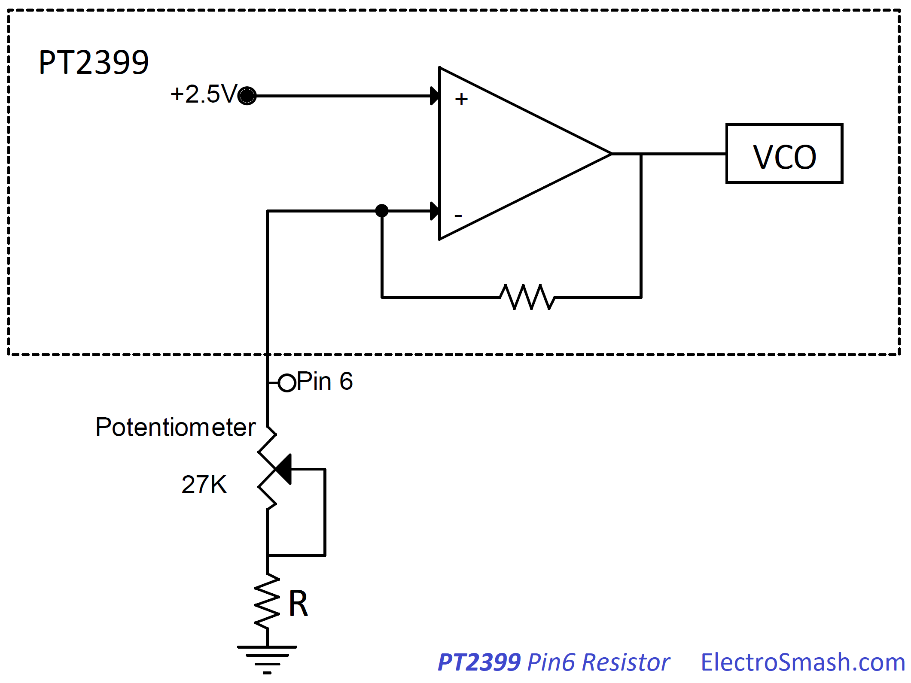
Once the oscillator has started, there is no need for 2K a minimum resistor (R), this is why many designs include the anti-latch-up circuit, so the system starts with a high impedance on pin 6 and then it is removed after power on so the PT2399 can accomplish shorter delay times. There is no substantial benefit of grounding the pin 6, using an R smaller than 100ohms will just cause an increase in the current demand without shorting the delay time.
- Use a transistor to limit the amount of current out of pin6. A PNP or NPN transistor could be used to limit the pin current. This method could be combined together with the anti-latch-up mod to ensure that the system will work under any condition.
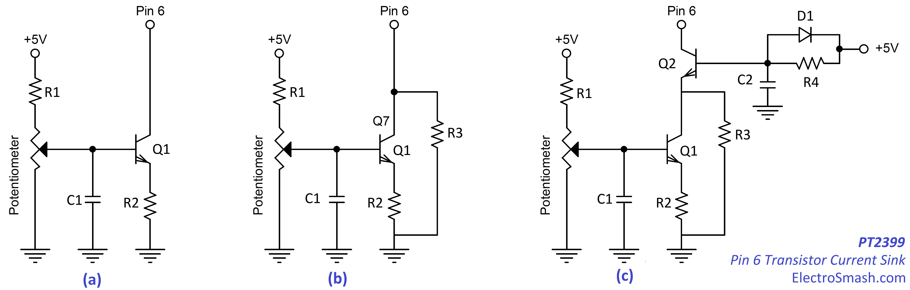
- The basic circuit (a) will limit the current flowing out of pin 6: the resistor R1 is needed so the range of the potentiometer can be limited in order to provide voltages from 0 to 0.65V to the base of the transistor (otherwise the potentiometer will work for a small portion of its whole span). R2 can be any small resistor 100 to 200Ω.
- The second (b) circuit uses a resistor in parallel, in this way the maximum resistance of pin6 can be controlled and we can have a better control over the maximum delay time to be used. i.e using an R3 of 20K will give us a maximum of 270ms (following the datasheet table).
- The last (c) schematic adds to the mix the anti-latch-up circuit, so we ensure that the circuit will always start under any condition (in case that during the power-on of the pedal (first 400ms) the Potentiometer is at its maximum position, setting the Q1 to ON and showing to pin 6 a low impedance.
- Digital Resistor: If you want to put a microcontroller into the mix, there are plenty of digital resistors that could be used as a variable resistor: the microchip MCP41XXX series (256taps), DS1804 series (100 taps). The side effect of this solution is that digital resistors have a big tolerance (±20%) and could be not the most accurate device if you want to set a specific delay time. However, they are a simple and reliable solution.
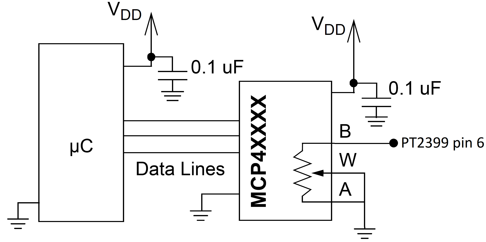
4. PT2399 ECHO/DELAY Circuit Analysis:
The most common application for the PT2399 is the Delay/Echo circuit described in the datasheet, these basic circuits are very similar and are the foundations to many other guitar pedals:
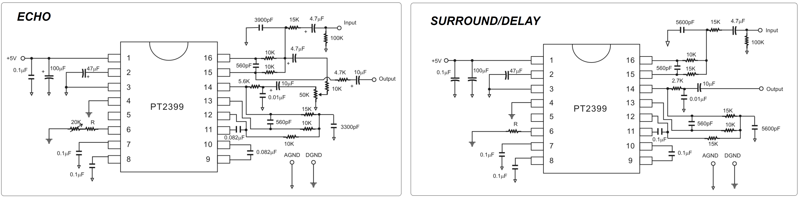
The main difference between the Delay and the Echo circuit is that the Echo has a feedback path between the output (pin14) and the input (pin16)
The Input Stage consists of 3 op-amps. Two of them (2 and 3) are always used as part of the Sigma-Delta ADC circuit, so the designer cannot use them freely. The first op-amp is available to be used under any configuration, but the most common option is to use it as a filter/adder in a Multi-Feedback topology:
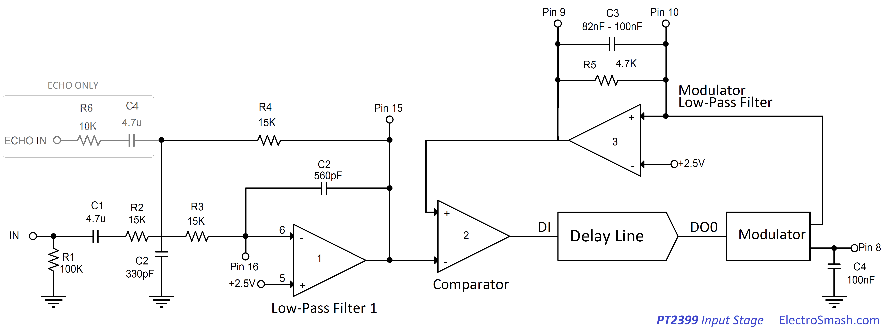
The Low-Pass Filter 1 aka Multi-Feedback Op-Amp Stage
The first op-amp will filter the input stage removing the excess of high harmonics using a Multi-Feedback topology (MFB aka Infinite-Gain Multiple-Feedback):
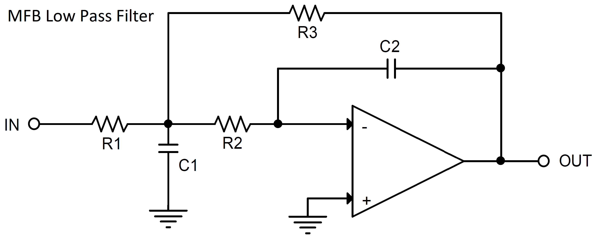
The Multi-Feedback op-amp uses 2 poles (MFB-2) that give -12dB/octave of attenuation to the high-frequencies. The final filter (R5 and C3) adds an extra pole, making the total filter -18dB/octave. The MFB topology gives high gain / high Q with the inconvenient of more complex design calculations.
The MFB performs as good as a Sallen & Key filter (S&K uses 1 component less for unity gain filters though) but the MFB topology is chosen in this case it allows the op-amp to work as a summing amplifier, accepting a feedback path of the ECHO circuit.
There are several ways to calculate the values for the filter. Following the simple Elliot Sound Products method, it can be done like this:
fc = 1 / (2 x π x R x C) - Select R and C to have the desired cut frequency.
Then:
R1 = R2 = 2 x R
R3 = R
C1 = C / Q
C2 = (C x Q) / 2
R = 10K
C = 10nF
Where Q is 1/√2 = 0.707 for an ideal Butterworth filter.
note: You can also use the Multiple Feedback Low-pass Filter Design Tool from Okawa-Denshi to calculate the values without doing all the mathematics.
- The Delay circuit uses R1=15K, R2=10K, R3=15K, C1=3.9nF, and C2=0.56nF. Generating a fc=8.8kHz ( with a Q=0.9 )
- The Echo circuit uses R1=15K, R2=10K, R3=10K, C1=5.6nF, and C2=0.56nF. Generating a fc=8.9kHz ( with a Q=1.1 )
The PT2399 shows a good performance with the input MFB filter tuned around 8.5kHz, with a wide frequency range and a reasonable low noise. The Delay circuit shows a combination of 10K and 15K resistors, there is no reason for doing that, you can stick to the same value (10K) and design the filter using just one resistor value.
The Delta-Sigma ADC Modulator:
In a Delta-Sigma (ΔΣ) modulator, the input audio signal is converted to a one-bit stream of logic levels which depend on the current direction (going high or going low) of the signal being converted. The clock rate is very high compared to the delayed audio signal's frequency in order to be able to use one-bit sampling.
The op-amps labelled as 2 and 3 in the image above are used in the processing of the one-bit data stream:
- The output of the MFB op-amp is applied to the inverting input of the comparator, the non-inverting input of which is connected to the output of the modulator being fed by DO0.
- DO0 (Data Out 0) is the output of a one-bit data latch into which the one bit converted audio data is stored until the next clock pulse.
- The output of this latch feeds the 44K bit memory. The voltage on the comparator's inverting input will be compared to the output of the modulator (after low pass filtering) and will either go high or low depending on the difference detected. The output of the comparator is serially streamed into and through the PT2399's 44K bit memory.
The C3 capacitor is explained in the next section of this article.
The output stage consists of 2 op-amps. The first one has limited functionality and it is used as a low pass filter after the Demodulator (Anti-Aliasing Filter). The second op-amp is freely available and is again usually configured in a Multi-Feedback op-amp filter.
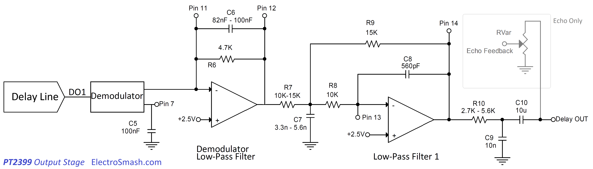
The output stage uses 1 op-amp as the Demodulator low-pass filter. This Reconstruction Filter will smooth the analog signal created by the Demodulator.
- R6 is an internal resistor that is labelled as 4.7KΩ in the datasheet
- The C6 (and C3) Capacitor forms a low pass filter in order to reduce the unwanted hi-frequencies, the datasheet suggests 100nF for delay and 82nF for the echo. There is no much info about the functionality of this caps. Lowering the values of C3 and C6 will allow more high harmonics to go through the chip and therefore a "more natural sound", of course, the drawback would be more digital noise into the signal. If you are using the PT2399 to do short delay/echo you can go as low as 22nF for C3 and C6, for longer delays (300ms) do not go lower than 47nF (100nF seems to be a good value for long delays).
Using 100nF on C3/C6, makes the delayed signal harmonics above 1kHz to be attenuated (see Frequency Response section), it is not catastrophic as the natural sound of a delayed/echoed signal has intrinsically less high content (real echoes usually have a rapidly diminishing HF content, as these harmonics are absorbed easily by the walls and air). A good middle ground value to allow more harmonics and less HF noise into the circuit would be 68nF.
The second op-amp is again in the MultiFeedBack topology (MFB), it will clean and smooth the signal even more.
- R10 and C9 form a last low pass filter with a cut frequency of 5.8kHz (using a 2.7KΩ resistor and a10nF cap) or 2.8kHz (using a 5.6KΩ resistor and a 10nF cap). The drawback of this last filter is that it will raise the output impedance of the circuit, this can be solved by using a more sensible RC combination, with a smaller R and a higher C (like 10Ω and 4.7u that give fc=3.3kHz).
- C10 is the output cap that removes any DC level from the output, any big value (4.7 / 10uF or similar) will work.
The PT2399 circuit needs to be driven from a low impedance (<1Kohm). The output impedance of the chip is low but the R10 resistor (2K7 in Delay and 5K6 in Echo circuit) will raise the output impedance value (the load should have an input impedance >100K ideally).
The recommended input signal levels are not specified in the datasheet. Testing it, good input levels are around 0.5 to 1Vrms (1.4 to 2.8 Vpp), with these levels the THD is <0.3% (following the datasheet) which is good to minimize the noise in the circuit.
If the input levels get higher, clipping will happen. The chip is quite tolerant to signal levels but the THD will raise and the sound quality will degrade. With the input signal with peaks over to 1.3Vrms (3.7Vpp) the THD will go over 0.5% causing clipping and audible distortion:
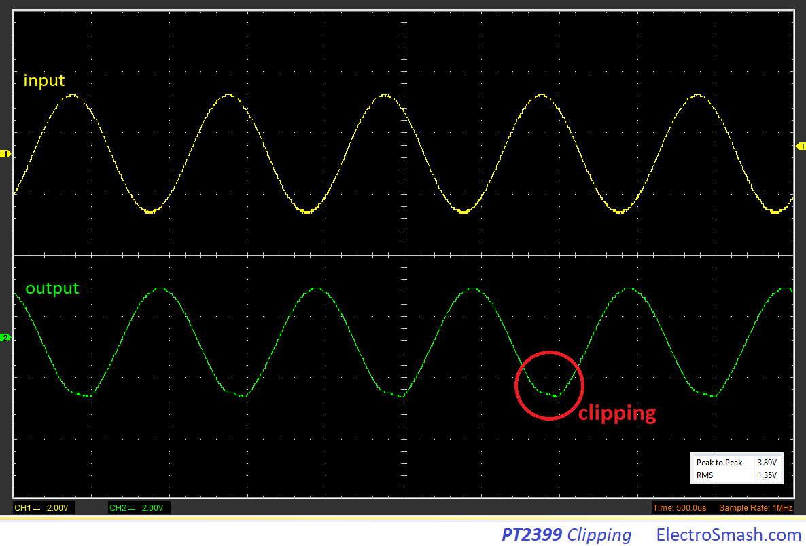
The datasheet states that the THD is <0.5%@0.5Vrms typical, going from 0.13%THD with 31.3ms of delay time and 1% THD at 342ms. Measuring it we get:
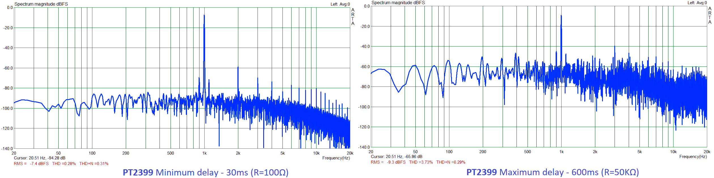
The graphs above show that with the minimum delay (30ms) the THD measured is 0.28%, with the noise around the -90dBFs as the datasheet says. As the delay time is increased, the THD also raises to 3% (and higher). If the delay time is kept below 350ms (25K resistor) the THD is reasonably good around 0.5%.
In summary, following the datasheet and setting the delay below the 350ms mark, the sound quality is good. If the delay is increased the distortion would be audible, but this is something that for guitar effects is not completely bad. Some users report that using a delay around 450ms, the sound breaks in a warm and musical way.
Using the basic DELAY schematic from the datasheet, the frequency response looks like this:
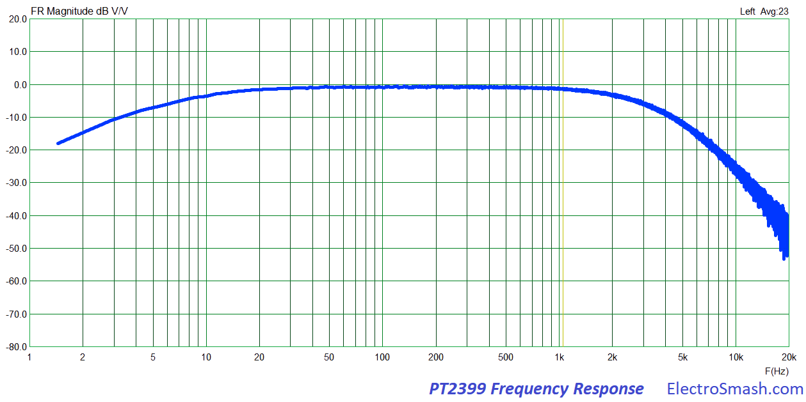
The response is flat until the 1kHz area, after that the treble rolls down due to the Modulator and Demodulator caps (C3 and C6) and the two MFB filters. The lack of treble after 5kHz is not bad as the natural sound of delayed signal is less bright due to the walls and air absorption ( and also the guitar does not have many harmonics over that frequencies).
6. Reducing Noise in PT2399 designs:
In order to keep the noise figures measured in the PT2399 under control, some guidelines could be followed to ensure the best functionality out if this part:
- Power Supply Design: Use a dedicated regulator for the PT2399; using a linear LM7805, LM2940 (or more complex LM317 or Zenner Follower) is a good idea.
- Use a decoupling cap from Vcc (pin1) to the analog ground as close to the chip as possible.
- Keep all the other caps (Modulator, Demodulator, MFB filters) as close to the IC as possible.
- Pay attention to the analog and digital grounds: do not solder all the grounds together in an indiscriminate way. The correct way to do it, is to separate the analog and digital grounds (ideally each subsystem running on a start-ground configuration) and finally, connect the analog and digital grounds at one point, the best union point is a thick short trace between pins 3 and 4.
- Capacitors: For longer delay times, the bandwidth of the system has to be limited, using big caps around 100nF on C3 (between pins 9 and 10) and C6 (between pins 11 and 12) will attenuate the HF the noise. Do not bother limiting the bandwidth of the MBF filters as they seem to not affect the HF noise response.
- Useful design equations for the PT2399 by Electric Druid.
- PT2399 Digital Delay Unit For Surround Sound, Reverb, Echo & PA by Elliott Sound Products.
- Active Filters - Characteristics, Topologies, and Examples by Elliott Sound Products.
- PT2399 by Ray Wilson
- PT2399 Design Notes by Valve Wizard
Our sincere appreciation to G.Warnstedt for helping us with the article.
Thanks for reading, all feedback is appreciated
Some Rights Reserved, you are free to copy, share, remix and use all material.
Trademarks, brand names and logos are the property of their respective owners.
Rescued from a 2022 Wayback Machine capture of the original electrosmash.com article, which is no longer online. Some links to pages outside this archive have been removed. The original PDF export of this article is in the pdf backups folder.